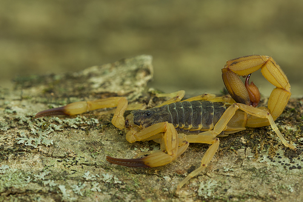

Tityus serrulatusIdentificação
O escorpião-amarelo apresenta coloração predominantemente amarela ou amarelo-clara, com pernas e cauda de tonalidade uniforme, sendo uma das espécies mais facilmente reconhecidas.
Peçonhento?
Sim, possui peçonha de alta importância médica, podendo causar acidentes graves, especialmente em crianças e idosos.
Importância ecológica
Apesar do risco à saúde humana, desempenha papel importante no controle populacional de insetos e outros pequenos invertebrados.
Em caso de identificação em áreas residenciais, recomenda-se evitar o contato e acionar os órgãos competentes para manejo adequado.